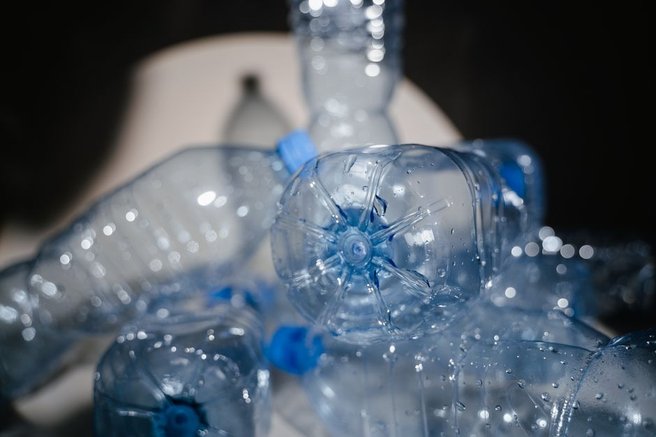
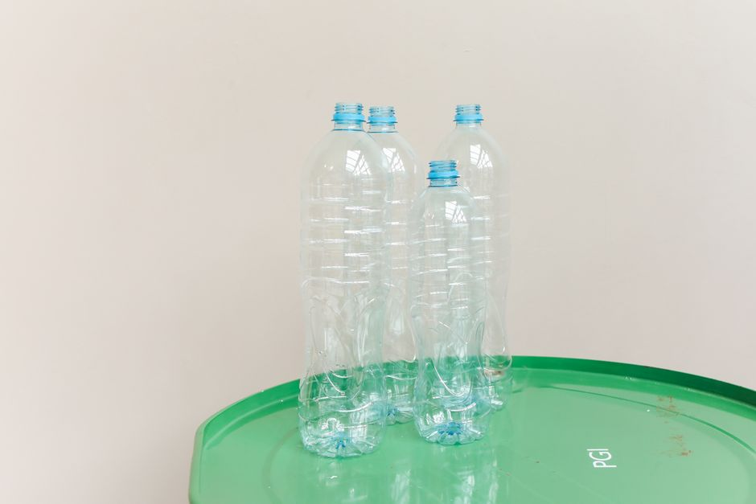

Comment utiliser les bouteilles en plastique pour créer un système d'arrosage automatique

Photo: MART PRODUCTION / Pexels
Utiliser des bouteilles en plastique pour créer un système d'arrosage automatique
Créer un système d'arrosage automatique pour vos plantes d'intérieur n'a jamais été aussi simple et économique grâce à des bouteilles en plastique. Ce système personnalisé vous permet de gérer efficacement l'arrosage de vos plantes, surtout si vous êtes un débutant en jardinage. Dans cet article, vous apprendrez comment utiliser des bouteilles en plastique pour mettre en place un système d'arrosage automatique qui optimise l'entretien de vos plantes d'intérieur.
Matériaux et outils nécessaires
Pour commencer, vous aurez besoin de quelques matériaux et outils. Pour ce projet, vous aurez besoin de:
- 2-3 bouteilles en plastique d'une capacité entre 1 et 2 litres
- Un petit perceuse ou un tournevis
- Une pince à sèche-cheveux
- Du scotch ou de la colle thermoplastique
- Des perles de drainage (de préférence du sable fin)
- Un puits d'arrosage (petite bouteille plongée dans le pot de la plante)
Étape 1 : Préparation des bouteilles

Photo: Polina Tankilevitch / Pexels
La première étape consiste à préparer les bouteilles. Utilisez une petite perceuse ou un tournevis pour percer un trou de taille moyenne (environ 1,5 cm) sur le dessus de chaque bouteille. Ce trou servira d'émetteur d'eau. Dans une bouteille, percez un autre trou de taille plus petite (environ 0,5 cm) à environ 2 cm du fond. Ce trou servira d'entrée d'eau.
Étape 2 : Assemblage du système
Assemblez le système en plongeant la petite bouteille avec le trou d'entrée d'eau dans le pot de la plante. Le haut de la petite bouteille doit être en contact avec l'eau du réservoir, et la bouteille de drainage doit être placée en dessous, à une distance d'environ 1 cm.
Étape 3 : Installation du réservoir
Placez les deux grandes bouteilles en plastique en émetteur d'eau de manière à ce que leur trou se superpose avec celui de la petite bouteille. Ces bouteilles serviront de réservoir d'eau. Raccordez-les à l'aide de scotch ou de colle thermoplastique. Il est préférable de connecter les deux bouteilles avec une longueur de tube en plastique pour éviter les fuites.
Étape 4 : Ajout de perles de drainage
Préparez le système en mettant des perles de drainage dans la petite bouteille en dessous. Ces perles permettront une bonne drainage et empêcheront l'excédent d'eau de monter vers le haut.
Étape 5 : Lancement du système
Passez à la mise en place du système. Remplissez les bouteilles en plastique d'eau jusqu'à la moitié. Le système peut maintenant être utilisé. Les bouteilles en plastique agissent comme un réservoir d'eau et l'arrosage se fait par capillarité.
Conseils pratiques pour un système d'arrosage automatisé efficace
- Choisissez la bonne taille de bouteille : Pour un pot de 15 cm de diamètre, une bouteille d'une capacité de 1,5 litre devrait suffire.
- Mettez régulièrement de l'eau : Il est recommandé de remplir le réservoir d'eau une fois par semaine.
- Surveillez la fréquence d'arrosage : La plupart des plantes d'intérieur aiment être arrosées deux fois par semaine. Assurez-vous que l'arrosage se fait régulièrement et uniformément.
- Regardez l'état de l'eau : Si l'eau est jaunâtre, changez-la. Cela peut indiquer la présence de bactéries.
Exemple concret : Arrosage d'une plante fuchsias
Imaginez que vous avez une plante de fuchsias dans un pot de 20 cm de diamètre. Pour ce plant, vous aurez besoin d'une bouteille de 2 litres pour le réservoir et d'une petite bouteille de 500 ml pour l'entrée d'eau. Remplissez le réservoir d'eau jusqu'à la moitié et placez le système dans le pot. Arrosez votre fuchsias deux fois par semaine, et vérifiez la quantité d'eau du réservoir une fois par semaine pour éviter le dessèchement.
Conclusion
En utilisant des bouteilles en plastique, vous pouvez créer un système d'arrosage automatique efficace pour vos plantes d'intérieur. Ce système non seulement simplifie le processus d'arrosage mais permet également de conserver l'eau et de réduire le coût de l'entretien de vos plantes. Avec ces étapes simples et faciles à suivre, vous pourrez gérer efficacement l'arrosage de vos plantes et passer à d'autres tâches de jardinage.
Produits recommandés
En tant que Partenaire Amazon, je réalise un bénéfice sur les achats remplissant les conditions requises.